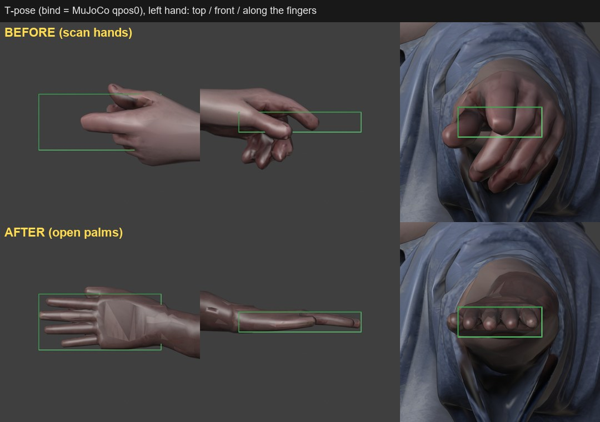
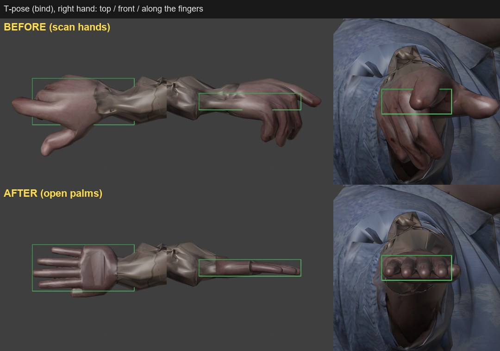
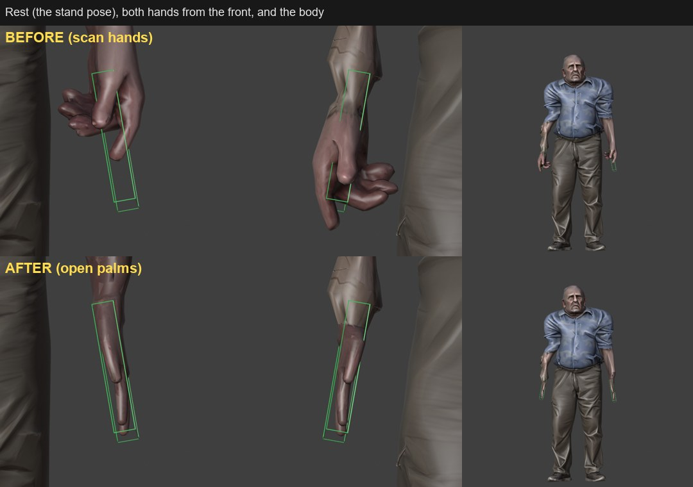
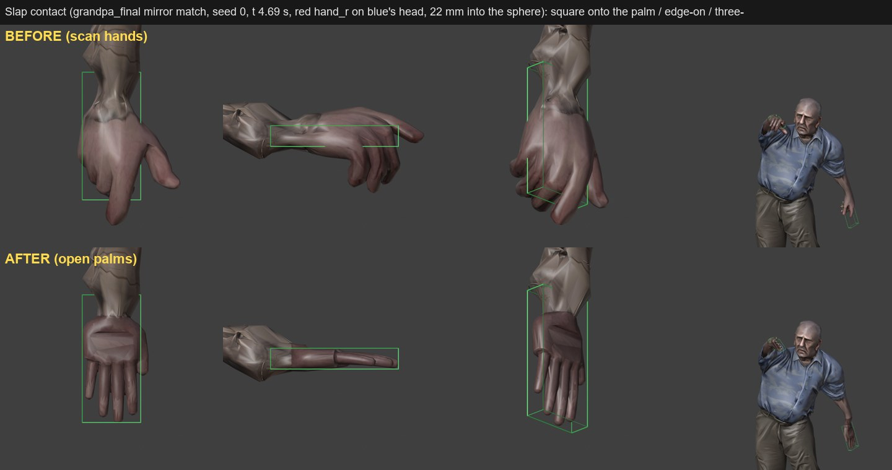

Approved after DOCS/20261103/collision_review.md: the scan's right hand was curled and rolled ~30 deg off its box, the left a fist.
Made headlessly by Scripts/blender_open_hands.py (source kept: Content/Art/Raw/Grandpa_rigged_scanhands.blend);
stills and angles by Scripts/render_open_hands.py with poses from Scripts/open_hands_poses.py (CPU MuJoCo). Green wireframes =
the hand boxes of training/models/grandpa_solo.xml (8.4 x 18.4 x 3 cm), carried by the hand bones. Workbench, Blender 5.2.
The hand's vertices (hand-bone weight ≥ 0.5) on the skinned mesh, in the box's frame; principal axes. Palm normal = smallest axis vs the box's thin axis,
finger axis = largest axis vs the box's long axis (degrees, target < 5). Outside = p90 of the vertices' distance outside the box (as Scripts/collision_mesh_clip.py).
| pose | hand | palm normal before | after | finger axis before | after | outside p90 mm before | after | % inside before | after |
|---|---|---|---|---|---|---|---|---|---|
| bind | hand_l | 85.3 | 2.2 | 55.6 | 4.2 | 41.0 | 3.2 | 25.4 | 78.8 |
| bind | hand_r | 30.1 | 2.7 | 12.8 | 2.8 | 46.4 | 3.6 | 21.4 | 80.3 |
| stand | hand_l | 85.3 | 2.2 | 55.6 | 4.2 | 41.0 | 3.2 | 25.4 | 78.8 |
| stand | hand_r | 30.1 | 2.7 | 12.8 | 2.8 | 46.4 | 3.6 | 21.4 | 80.3 |
| slap | hand_l | 81.8 | 2.1 | 49.7 | 4.5 | 41.4 | 3.2 | 26.6 | 77.9 |
| slap | hand_r | 30.2 | 2.6 | 12.9 | 2.8 | 46.4 | 3.6 | 22.0 | 80.8 |

before: palm normal 85.3 deg, finger axis 55.6 deg, outside box p90 41.0 mm
after: palm normal 2.2 deg, finger axis 4.2 deg, outside box p90 3.2 mm

before: palm normal 30.1 deg, finger axis 12.8 deg, outside box p90 46.4 mm
after: palm normal 2.7 deg, finger axis 2.8 deg, outside box p90 3.6 mm
before: palm normal 85.3 deg, finger axis 55.6 deg, outside box p90 41.0 mm
after: palm normal 2.2 deg, finger axis 4.2 deg, outside box p90 3.2 mm

before: palm normal 30.1 deg, finger axis 12.8 deg, outside box p90 46.4 mm
after: palm normal 2.7 deg, finger axis 2.8 deg, outside box p90 3.6 mm
before: palm normal 85.3 deg, finger axis 55.6 deg, outside box p90 41.0 mm
after: palm normal 2.2 deg, finger axis 4.2 deg, outside box p90 3.2 mm

before: palm normal 30.2 deg, finger axis 12.9 deg, outside box p90 46.4 mm
after: palm normal 2.6 deg, finger axis 2.8 deg, outside box p90 3.6 mm
| hand | cut u (mm from wrist joint) | cut perimeter cm | scan verts removed | new verts | new faces |
|---|---|---|---|---|---|
| hand_l | -69.9 | 20.8 | 462 | 804 | 1628 |
| hand_r | 30.1 | 14.4 | 493 | 755 | 1531 |
Mesh: 9984 → 10686 vertices, 21289 faces, non-manifold edges 0, boundary edges 0.
FBX re-import, old (HEAD) vs new, Blender 5.2 (Scripts-side tool cmp_fbx): Grandpa_rigged.fbx bones same names True (17), bone max diff 0.0, vertex groups same, shape keys Basis/CheekDent_L/CheekDent_R (max disp 18.0 mm both), verts 9984 -> 10686 Grandpa_LOD1.fbx bones 17, bone max diff 0.0, groups same, CheekDent_L/R 18.0 mm, verts 4984 -> 5339 Grandpa_LOD2.fbx bones 17, bone max diff 0.0, groups same, CheekDent_L/R 18.0 mm, verts 2484 -> 2665 three.js r-GLTFLoader + meshopt decoder (Node): Web/assets/grandpa.glb PASS: SkinnedMesh, 17 bones, morphs CheekDent_L/CheekDent_R, attrs _cheekmask, morph position+normal Content/Art/Exports/Grandpa_rigged.glb PASS: same; skeleton vs old: bone world + inverse-bind matrices max diff 0.0 web GLB vs old web GLB: bone world matrices max diff 0.0 (the bind matrix differs only by meshopt's quantization scale, 0.854 -> 0.865: the hands widened the bounds) python Scripts/check_naming.py: 130 assets, 0 errors, 0 warnings (PASS)
| file | before | after |
|---|---|---|
| Web/assets/grandpa.glb | 605752 | 623384 |
| Content/Art/Exports/Grandpa_rigged.fbx | 1050812 | 1140684 |
| Content/Art/Exports/Grandpa_rigged.glb | 38621876 | 38725572 |
| Content/Art/Exports/Grandpa_LOD1.fbx | 572108 | 616300 |
| Content/Art/Exports/Grandpa_LOD2.fbx | 327244 | 349420 |
| Content/Art/Raw/Grandpa_rigged.blend | 1113740 | 1170572 |
| Content/Art/Raw/Grandpa_rigged_scanhands.blend (new: the scan's hands) | - | 1113740 |